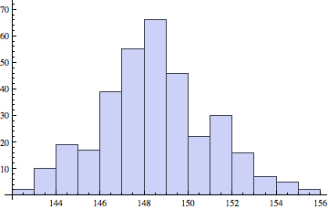

以下のデータはある科目の成績である。
0 0 0 66 52 0 0 55 82 76 0 91 98 88 84 83 64 88 10 49 94 42 76 65 98 45 90 76 83 88 100 80 95 100 83 30 82 98 73 84 13 83 71 0 91 70 93 83 63 55 93 83 85 84 95 87 5 98 64 98 80 74 98 52 95 4 78 86 89 93 71 48 79 98 77 83 74 78 49 100 100 58 78 89 85 93 98 49 3 95 10 98 98 85 66 76 100 91 93 93 88 98 78 93 85 90 100 98 89 0 0 0 70 74 85 83 71 60 91 88 55 86 81 93 57 90 100 85 88 78 68 80 88 90 93 93 0 0 44 0 0 60 93 84 75 98 68 70 90 68 75 93 74 55 65 90 78 80 63 85 0 0 0 63 73 0 68 0 0 30 0 91 78
上のデータをコピーし、data.txt という名前のファイルに保存せよ。ファイルの保存場所はディレクトリ nc とせよ。そして以下のプログラムを実行し、このテストの平均点を求めよ。
#include <stdio.h>
int main ()
{
FILE *fp;
fp = fopen("data.txt", "r");
int x;
double s = 0.0;
int i = 0;
while (fscanf(fp, "%d", &x) != EOF ) {
s = s + x;
i++;
}
printf("平均値は %g 点です。\n", s/i);
fclose(fp);
}
平均値は 67.763 点と出力されるはずである。
0点の人は期末試験を受けていない人達なので、0点を除いて平均点を計算したい。そのような計算をするプログラムを作成せよ。
平均値は 77.125 点と出力されるはずである。
0点の人を除いて、平均点、合格率(60点以上の人の割合)、分散、標準偏差、を計算するプログラムを作成せよ。
平均値 77.125 点、合格率 84.8684 ％、分散 429.754、標準偏差 20.7305 点と出力されるはずである。
上のデータから得点分布を作成するプログラムを作成せよ。出力は以下のようになる。
0 〜 9：************************ 10 〜 19：*** 20 〜 29： 30 〜 39：** 40 〜 49：******* 50 〜 59：******** 60 〜 69：*************** 70 〜 79：*************************** 80 〜 89：*************************************** 90 〜 99：***************************************** 100 〜 109：*******
発展問題 (余裕のある人だけやること)
以下は、財団法人日本エネルギー経済研究所石油情報センターによる各都道府県におけるガソリン価格(円/リッター)である。http://oil-info.ieej.or.jp/price/price_ippan_kyuyujo_syuji.html
